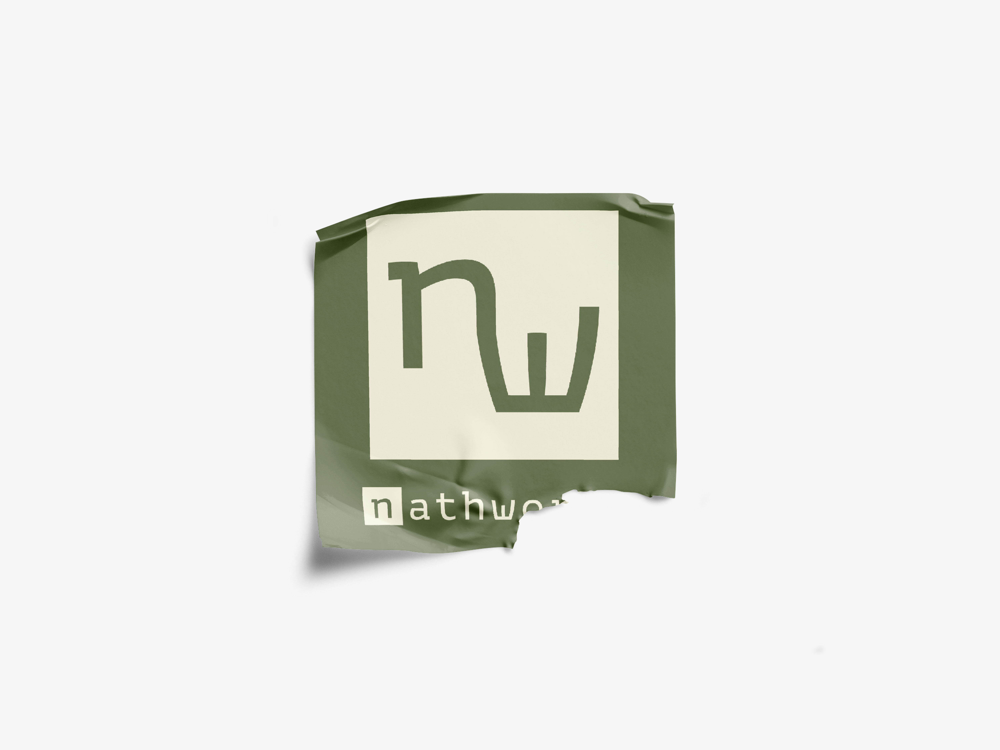

Política de Cancelaciones y Reembolsos
En NathWorks, cada proyecto se desarrolla de manera personalizada, lo que implica inversión de tiempo, creatividad y planificación específica para cada cliente. Por esta razón, te pedimos leer cuidadosamente nuestra política de cancelaciones y reembolsos antes de contratar un servicio.
1. Confirmación de Proyecto
Un proyecto se considera confirmado una vez que el cliente acepta la cotización y se realiza el anticipo o pago inicial acordado. A partir de este punto, se comienza la planificación y/o desarrollo creativo del servicio.
2. Cancelaciones por Parte del Cliente
a - Si la cancelación se solicita antes del inicio del trabajo creativo o técnico, se podrá reembolsar el 80% del anticipo, conservando el 20% por gastos administrativos y de planificación.
b - Si el proyecto ya ha iniciado, no se realizará ningún reembolso, ya que el tiempo, recursos y creatividad ya han sido invertidos.
c - En algunos casos, si el avance es parcial y hay justificación válida, se puede negociar una devolución proporcional o la entrega parcial del trabajo realizado.
3. Cancelaciones por Parte de NathWorks
En situaciones excepcionales (por ejemplo, enfermedad, problemas técnicos mayores o causas de fuerza mayor), NathWorks se reserva el derecho de cancelar un proyecto. En ese caso:
a - Se notificará al cliente de inmediato.
b - Se reembolsará el monto correspondiente al trabajo no realizado.
c - Se podrá entregar cualquier material avanzado que ya haya sido producido hasta el momento de la cancelación.
4. Reembolsos
a - No se otorgan reembolsos por insatisfacción subjetiva si el trabajo se ha desarrollado según lo acordado en la propuesta inicial y se han realizado las revisiones pactadas.
b - Se recomienda revisar cuidadosamente las propuestas, bocetos y entregas preliminares para asegurar que el resultado final cumpla con tus expectativas.
5. Cambios en esta Política
NathWorks se reserva el derecho de actualizar esta política en cualquier momento. Cualquier modificación será publicada en este sitio web y tendrá efecto inmediato a partir de su publicación.